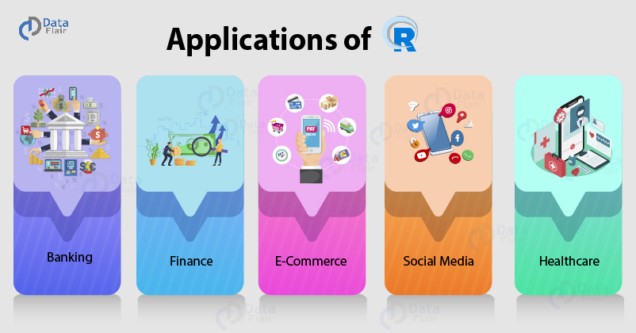

sudo apt-get install r-base
sudo apt-get install gdebi-core
wget https://download2.rstudio.org/server/debian9/x86_64/
rstudio-server-1.4.1103-amd64.deb
sudo gdebi rstudio-server-1.4.1103-amd64.debMäRchen: Text Mining mit den sieben Zwergen
Einführung
Lernziele
In diesem Kurs lernen oder üben Sie …
deutsche und chinesische und arabische Volksmärchen in deutscher Übersetzung zu lesen.
in Märchen tradierte kulturspezifische Bilderwelten und Narrative zu erkennen und wiederzugeben.
…
sprachliche Daten in computerlesbare Daten umzuwandeln.
Daten quantitativ zu analysieren und sachbezogen zu interpretieren.
R
R Freie Programmiersprache für statistische Berechnungen und Grafiken
 Anwendungen von R außerhalb der Wissenschaft1
Text Mining
Text Mining Vorgang, bei dem ungeordnete sprachliche Daten (Texte) mit dem Computer geordnet und dann nach bedeutungsvollen Mustern durchsucht werden (https://www.ibm.com/cloud/learn/text-mining)
Suche nach Text Mining auf dem Jobportal Indeed.com am 07.09.2021 ergibt Gesuche von:


Datengrundlage Text
Korpus Große, digitale Sammlung von Texten
Korpus-Linguistik Teil der Sprachwissenschaft, der Korpora und bestimmte Untersuchungsmethoden nutzt
| Korpus | Wörter |
|---|---|
| DeReKo | 46,9 Mrd. |
| iWeb | 14 Bio. |
| DiSKo | 180 k |
| Unsere Korpora | Wörter | Texte |
|---|---|---|
| Grimm Märchenkorpus2 | 259 k | 211 |
| Chinesische Volksmärchen3 | 108 k | 100 |
| Arabische Volksmärchen4 | 782 k | 169 |
Erste Aufgaben
- Wählen Sie ein deutsches, ein chinesisches und ein arabisches Volksmärchen aus.
| China “Intranet” | |
|---|---|
| Deutsche Märchen | shorturl.at/rwIK8 |
| Chinesische Märchen | shorturl.at/jnzBW |
| Arabische Märchen | shorturl.at/dqxCP |
- Lesen Sie Ihre Märchen.
- Suchen Sie im Internet ein passendes Bild für jedes Ihrer Märchen.
- Schicken Sie mir Bilder und Titel Ihrer Märchen.
Erste Aufgaben
Versuchen Sie, R und RStudio auf Ihrem Computer zu installieren.
Windows/Mac
- R
- Besuchen Sie CRAN (Comprehensive R Archive Network) https://cran.r-project.org/.
- Laden Sie die für Sie richtige Version von R (Windows, Mac) herunter.
- Installieren Sie R auf Ihrem Computer.
- R Studio
- Besuchen Sie https://rstudio.com/products/rstudio/download/#download.
- Laden Sie die richtige Version für Ihren Computer herunter.
- Installieren Sie R Studio auf Ihrem Computer.
Ubuntu
Fußnoten
https://data-flair.training/blogs/r-applications/↩︎
Walter, M. (2021). Märchenkorpus Version 1.0 (1.0). Humboldt-Universität zu Berlin. https://www.laudatio-repository.org/browse/corpus/UyRUCnMB7CArCQ9C63ji/corpora, 07.09.2012.↩︎
Wikisource (ohne Datum). Chinesische Volksmärchen. Übersetzt und eingeleitet von Richard Wilhelm. 1914. https://de.wikisource.org/wiki/Chinesische_Volksm%C3%A4rchen, 07.09.2021.↩︎
Eden, J. (ohne Datum). Märchen aus 1001 Nacht. Übersetzt und eingeleitet von Gustav Weil. 1865. https://eden.one/tausendundeinenacht, 07.09.2021.↩︎